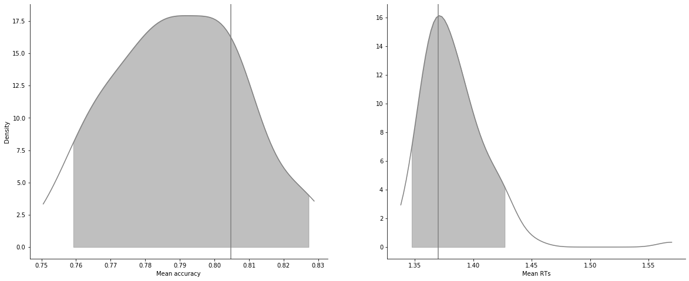
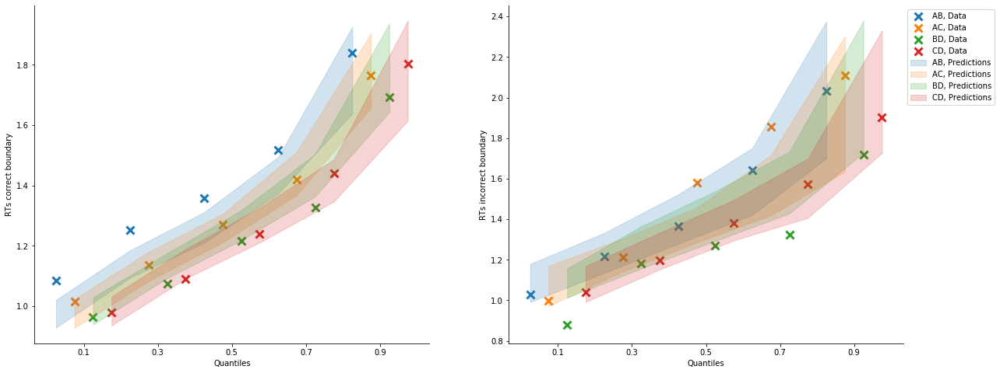

[1]:
import rlssm
import pandas as pd
import os
/Users/Khamir/opt/anaconda3/lib/python3.7/site-packages/statsmodels/tools/_testing.py:19: FutureWarning: pandas.util.testing is deprecated. Use the functions in the public API at pandas.testing instead.
import pandas.util.testing as tm
Import the grouped data¶
[2]:
par_path = os.path.abspath(os.path.join(os.getcwd(), os.pardir))
data_path = os.path.join(par_path, 'data/data_experiment.csv')
data = pd.read_csv(data_path, index_col=0)
data = data[data.participant < 5].reset_index(drop=True)
data['block_label'] += 1
data.head()
INFO:numexpr.utils:NumExpr defaulting to 4 threads.
[2]:
| participant | block_label | trial_block | f_cor | f_inc | cor_option | inc_option | times_seen | rt | accuracy | |
|---|---|---|---|---|---|---|---|---|---|---|
| 0 | 1 | 1.0 | 1.0 | 43.0 | 39.0 | 2 | 1 | 1.0 | 1.244082 | 0.0 |
| 1 | 1 | 1.0 | 2.0 | 60.0 | 50.0 | 4 | 3 | 1.0 | 1.101821 | 1.0 |
| 2 | 1 | 1.0 | 3.0 | 44.0 | 36.0 | 4 | 2 | 2.0 | 1.029923 | 0.0 |
| 3 | 1 | 1.0 | 4.0 | 55.0 | 55.0 | 4 | 3 | 2.5 | 1.368007 | 0.0 |
| 4 | 1 | 1.0 | 5.0 | 52.0 | 49.0 | 4 | 3 | 3.5 | 1.039329 | 1.0 |
[3]:
model = rlssm.LBAModel_2A(hierarchical_levels=2)
Using cached StanModel
[4]:
model.family, model.model_label, model.hierarchical_levels
[4]:
('LBA_2A', 'hierLBA_2A', 2)
[5]:
# sampling parameters
n_iter = 1000
n_chains = 2
n_thin = 5
[6]:
model_fit = model.fit(
data,
thin = n_thin,
iter = n_iter,
chains = n_chains)
WARNING:pystan:Maximum (flat) parameter count (1000) exceeded: skipping diagnostic tests for n_eff and Rhat.
To run all diagnostics call pystan.check_hmc_diagnostics(fit)
WARNING:pystan:3 of 200 iterations ended with a divergence (1.5 %).
WARNING:pystan:Try running with adapt_delta larger than 0.8 to remove the divergences.
Checks MCMC diagnostics:
n_eff / iter looks reasonable for all parameters
3.0 of 200 iterations ended with a divergence (1.5%)
Try running with larger adapt_delta to remove the divergences
0 of 200 iterations saturated the maximum tree depth of 10 (0.0%)
E-BFMI indicated no pathological behavior
get Rhat¶
[7]:
model_fit.rhat.describe()
[7]:
| rhat | |
|---|---|
| count | 30.000000 |
| mean | 0.999273 |
| std | 0.008194 |
| min | 0.990405 |
| 25% | 0.992507 |
| 50% | 0.996603 |
| 75% | 1.005066 |
| max | 1.017150 |
[8]:
model_fit.rhat.head()
[8]:
| rhat | variable | |
|---|---|---|
| 0 | 1.002684 | mu_k |
| 1 | 1.017150 | mu_A |
| 2 | 1.011485 | mu_tau |
| 3 | 0.994214 | mu_drift_cor |
| 4 | 0.995007 | mu_drift_inc |
get wAIC¶
[9]:
model_fit.waic
[9]:
{'lppd': -659.8292291231717,
'p_waic': 14.398147389121267,
'waic': 1348.454753024586,
'waic_se': 70.53365919315138}
Posteriors¶
[10]:
model_fit.samples
[10]:
| chain | draw | transf_mu_k | transf_mu_A | transf_mu_tau | transf_mu_drift_cor | transf_mu_drift_inc | k_sbj[1] | k_sbj[2] | k_sbj[3] | ... | tau_sbj[3] | tau_sbj[4] | drift_cor_sbj[1] | drift_cor_sbj[2] | drift_cor_sbj[3] | drift_cor_sbj[4] | drift_inc_sbj[1] | drift_inc_sbj[2] | drift_inc_sbj[3] | drift_inc_sbj[4] | |
|---|---|---|---|---|---|---|---|---|---|---|---|---|---|---|---|---|---|---|---|---|---|
| 0 | 0 | 33 | 2.116597 | 1.338349 | 0.381280 | 3.603536 | 1.620386 | 2.427753 | 2.194836 | 2.012985 | ... | 0.482439 | 0.334886 | 3.614156 | 3.238803 | 3.123775 | 2.330503 | 1.851891 | 2.179630 | 1.697840 | 1.309086 |
| 1 | 0 | 93 | 2.185097 | 1.096781 | 0.352570 | 2.951197 | 1.908756 | 2.171441 | 2.188182 | 2.155978 | ... | 0.469759 | 0.344129 | 3.086082 | 3.189613 | 3.070230 | 2.588657 | 1.796968 | 2.142397 | 1.712583 | 1.459675 |
| 2 | 0 | 99 | 2.903800 | 0.981400 | 0.533014 | 2.947745 | 2.197179 | 2.443252 | 3.002368 | 3.077526 | ... | 0.336045 | 0.246966 | 3.231697 | 3.384630 | 3.456706 | 2.494438 | 1.812255 | 2.346188 | 2.149004 | 1.460470 |
| 3 | 0 | 22 | 2.203689 | 1.254962 | 0.249549 | 3.356051 | 1.979913 | 2.610175 | 2.560882 | 2.263008 | ... | 0.499012 | 0.260608 | 3.264399 | 3.006211 | 3.459169 | 2.651102 | 1.700218 | 1.890264 | 2.199311 | 1.430648 |
| 4 | 0 | 2 | 2.884682 | 1.242406 | 0.307172 | 3.354291 | 2.080782 | 2.889428 | 2.881449 | 2.890556 | ... | 0.339286 | 0.174014 | 3.509903 | 3.259945 | 3.486196 | 2.641624 | 2.113326 | 2.345569 | 2.285513 | 1.654545 |
| ... | ... | ... | ... | ... | ... | ... | ... | ... | ... | ... | ... | ... | ... | ... | ... | ... | ... | ... | ... | ... | ... |
| 195 | 1 | 43 | 1.983522 | 1.487776 | 0.439639 | 2.374058 | 1.718187 | 1.967784 | 2.849700 | 1.440496 | ... | 0.601606 | 0.352036 | 3.610108 | 3.506210 | 3.261042 | 2.525623 | 2.106584 | 2.546072 | 1.870881 | 1.435162 |
| 196 | 1 | 11 | 2.428873 | 1.256852 | 0.340888 | 3.117813 | 2.061240 | 2.345559 | 2.293205 | 2.421725 | ... | 0.446571 | 0.298555 | 3.628744 | 3.246235 | 3.403352 | 2.765723 | 2.210042 | 2.322141 | 2.038365 | 1.673564 |
| 197 | 1 | 41 | 1.322069 | 1.935409 | 0.552458 | 3.794194 | 1.905264 | 1.583554 | 1.902411 | 1.684844 | ... | 0.576516 | 0.384892 | 3.068002 | 3.244090 | 3.488022 | 2.450875 | 1.398472 | 2.098001 | 2.102133 | 1.571216 |
| 198 | 1 | 47 | 1.403505 | 1.536556 | 0.390842 | 3.256251 | 2.007068 | 1.772746 | 2.214247 | 1.872733 | ... | 0.541644 | 0.092972 | 3.180530 | 3.040381 | 3.352710 | 2.892627 | 1.956880 | 2.190136 | 1.854504 | 1.953335 |
| 199 | 1 | 25 | 2.720480 | 1.748605 | 0.303714 | 3.872172 | 1.987301 | 2.901460 | 2.604627 | 2.881474 | ... | 0.332194 | 0.188701 | 3.686077 | 3.083921 | 3.868119 | 2.595100 | 2.175692 | 2.139833 | 2.406272 | 1.477101 |
200 rows × 27 columns
[11]:
model_fit.trial_samples
[11]:
OrderedDict([('k_t',
array([[2.42775325, 2.42775325, 2.42775325, ..., 2.02131946, 2.02131946,
2.02131946],
[2.17144103, 2.17144103, 2.17144103, ..., 2.15858078, 2.15858078,
2.15858078],
[2.44325199, 2.44325199, 2.44325199, ..., 2.43657723, 2.43657723,
2.43657723],
...,
[1.5835537 , 1.5835537 , 1.5835537 , ..., 1.69313883, 1.69313883,
1.69313883],
[1.7727459 , 1.7727459 , 1.7727459 , ..., 3.40965868, 3.40965868,
3.40965868],
[2.90145968, 2.90145968, 2.90145968, ..., 2.69550546, 2.69550546,
2.69550546]])),
('A_t',
array([[1.54784573, 1.54784573, 1.54784573, ..., 1.71891298, 1.71891298,
1.71891298],
[1.16592426, 1.16592426, 1.16592426, ..., 1.64683556, 1.64683556,
1.64683556],
[1.13148555, 1.13148555, 1.13148555, ..., 1.3866687 , 1.3866687 ,
1.3866687 ],
...,
[1.48672524, 1.48672524, 1.48672524, ..., 2.66240911, 2.66240911,
2.66240911],
[1.48880292, 1.48880292, 1.48880292, ..., 1.51637015, 1.51637015,
1.51637015],
[1.39397143, 1.39397143, 1.39397143, ..., 1.54543443, 1.54543443,
1.54543443]])),
('tau_t',
array([[0.41204127, 0.41204127, 0.41204127, ..., 0.33488649, 0.33488649,
0.33488649],
[0.4461159 , 0.4461159 , 0.4461159 , ..., 0.34412892, 0.34412892,
0.34412892],
[0.3841051 , 0.3841051 , 0.3841051 , ..., 0.24696556, 0.24696556,
0.24696556],
...,
[0.54535266, 0.54535266, 0.54535266, ..., 0.38489161, 0.38489161,
0.38489161],
[0.52671551, 0.52671551, 0.52671551, ..., 0.09297192, 0.09297192,
0.09297192],
[0.31965585, 0.31965585, 0.31965585, ..., 0.1887009 , 0.1887009 ,
0.1887009 ]])),
('drift_cor_t',
array([[3.61415639, 3.61415639, 3.61415639, ..., 2.3305029 , 2.3305029 ,
2.3305029 ],
[3.08608165, 3.08608165, 3.08608165, ..., 2.58865659, 2.58865659,
2.58865659],
[3.23169679, 3.23169679, 3.23169679, ..., 2.49443761, 2.49443761,
2.49443761],
...,
[3.06800204, 3.06800204, 3.06800204, ..., 2.45087464, 2.45087464,
2.45087464],
[3.18052961, 3.18052961, 3.18052961, ..., 2.89262715, 2.89262715,
2.89262715],
[3.68607718, 3.68607718, 3.68607718, ..., 2.59510035, 2.59510035,
2.59510035]])),
('drift_inc_t',
array([[1.85189129, 1.85189129, 1.85189129, ..., 1.30908566, 1.30908566,
1.30908566],
[1.7969683 , 1.7969683 , 1.7969683 , ..., 1.4596754 , 1.4596754 ,
1.4596754 ],
[1.81225506, 1.81225506, 1.81225506, ..., 1.46047012, 1.46047012,
1.46047012],
...,
[1.39847245, 1.39847245, 1.39847245, ..., 1.57121624, 1.57121624,
1.57121624],
[1.95687987, 1.95687987, 1.95687987, ..., 1.95333468, 1.95333468,
1.95333468],
[2.17569229, 2.17569229, 2.17569229, ..., 1.47710071, 1.47710071,
1.47710071]]))])
[12]:
model_fit.plot_posteriors(height=5, show_intervals='HDI');

Posterior predictives¶
[13]:
pp_rt, pp_acc = model_fit.get_posterior_predictives(n_posterior_predictives=100)
[14]:
pp_rt
[14]:
array([[1.12574928, 1.3262991 , 1.47922591, ..., 4.57210192, 0.93350578,
1.28149431],
[1.48526029, 1.34244403, 1.29549071, ..., 1.16715304, 1.52218855,
1.16203916],
[1.47523432, 1.50388296, 1.24944925, ..., 2.22339223, 1.58397983,
1.58569829],
...,
[1.42033225, 1.21050289, 1.2433317 , ..., 1.69689868, 1.61722953,
1.02697444],
[1.24556239, 1.15471298, 1.15684635, ..., 1.9141045 , 1.0070316 ,
1.14836997],
[1.49559531, 1.86990204, 1.35958159, ..., 1.82024201, 1.66616275,
1.31533404]])
[15]:
pp_acc
[15]:
array([[0., 1., 1., ..., 1., 1., 1.],
[0., 0., 1., ..., 1., 1., 1.],
[0., 1., 1., ..., 0., 1., 1.],
...,
[1., 1., 0., ..., 1., 0., 1.],
[1., 0., 1., ..., 1., 1., 1.],
[1., 1., 1., ..., 0., 0., 1.]])
[16]:
pp_summary = model_fit.get_posterior_predictives_summary(n_posterior_predictives=100)
pp_summary
[16]:
| mean_accuracy | mean_rt | skewness | quant_10_rt_incorrect | quant_30_rt_incorrect | quant_50_rt_incorrect | quant_70_rt_incorrect | quant_90_rt_incorrect | quant_10_rt_correct | quant_30_rt_correct | quant_50_rt_correct | quant_70_rt_correct | quant_90_rt_correct | |
|---|---|---|---|---|---|---|---|---|---|---|---|---|---|
| sample | |||||||||||||
| 1 | 0.805846 | 1.388278 | 1.921747 | 1.090355 | 1.238195 | 1.407796 | 1.615746 | 2.182597 | 0.971848 | 1.148799 | 1.278370 | 1.430780 | 1.814142 |
| 2 | 0.802714 | 1.388542 | 3.379581 | 1.074286 | 1.260072 | 1.397638 | 1.578677 | 1.933845 | 0.995742 | 1.171498 | 1.274572 | 1.446435 | 1.806271 |
| 3 | 0.810021 | 1.382387 | 15.036405 | 1.034060 | 1.190330 | 1.390953 | 1.563869 | 1.995118 | 0.967859 | 1.126155 | 1.270111 | 1.426946 | 1.798567 |
| 4 | 0.815240 | 1.389397 | 1.915829 | 1.105873 | 1.283407 | 1.417170 | 1.634669 | 1.999893 | 0.982791 | 1.132796 | 1.279579 | 1.457659 | 1.825218 |
| 5 | 0.760960 | 1.390328 | 3.590419 | 1.056036 | 1.216089 | 1.392831 | 1.543994 | 1.904704 | 0.978549 | 1.145509 | 1.273912 | 1.418574 | 1.838601 |
| ... | ... | ... | ... | ... | ... | ... | ... | ... | ... | ... | ... | ... | ... |
| 96 | 0.797495 | 1.370139 | 2.708313 | 1.033000 | 1.201542 | 1.359908 | 1.545754 | 1.913142 | 0.959608 | 1.115805 | 1.259763 | 1.437578 | 1.793523 |
| 97 | 0.778706 | 1.362471 | 4.803176 | 1.086824 | 1.235673 | 1.368656 | 1.529434 | 1.976349 | 0.974123 | 1.120796 | 1.244918 | 1.399491 | 1.737274 |
| 98 | 0.771399 | 1.398084 | 2.269438 | 1.027356 | 1.211250 | 1.336761 | 1.517896 | 1.918415 | 0.993287 | 1.162717 | 1.292001 | 1.487544 | 1.849492 |
| 99 | 0.806889 | 1.359041 | 2.772443 | 1.055959 | 1.287039 | 1.418953 | 1.608341 | 1.931364 | 0.983232 | 1.135080 | 1.272718 | 1.421619 | 1.684887 |
| 100 | 0.777662 | 1.366028 | 3.201401 | 1.091522 | 1.244632 | 1.361374 | 1.524210 | 1.863612 | 0.959637 | 1.133464 | 1.263109 | 1.427507 | 1.741819 |
100 rows × 13 columns
[17]:
model_fit.plot_mean_posterior_predictives(n_posterior_predictives=100, figsize=(20,8), show_intervals='HDI');
[17]:


[18]:
model_fit.plot_quantiles_posterior_predictives(n_posterior_predictives=100, kind='shades');
[18]:


[19]:
import numpy as np
[20]:
data['choice_pair'] = 'AB'
data.loc[(data.cor_option == 3) & (data.inc_option == 1), 'choice_pair'] = 'AC'
data.loc[(data.cor_option == 4) & (data.inc_option == 2), 'choice_pair'] = 'BD'
data.loc[(data.cor_option == 4) & (data.inc_option == 3), 'choice_pair'] = 'CD'
data['block_bins'] = pd.cut(data.trial_block, 8, labels=np.arange(1, 9))
[21]:
data.head()
[21]:
| index | participant | block_label | trial_block | f_cor | f_inc | cor_option | inc_option | times_seen | rt | accuracy | accuracy_rescale | choice_pair | block_bins | |
|---|---|---|---|---|---|---|---|---|---|---|---|---|---|---|
| 0 | 0 | 1 | 1.0 | 1.0 | 43.0 | 39.0 | 2 | 1 | 1.0 | 1.244082 | 0.0 | 2 | AB | 1 |
| 1 | 1 | 1 | 1.0 | 2.0 | 60.0 | 50.0 | 4 | 3 | 1.0 | 1.101821 | 1.0 | 1 | CD | 1 |
| 2 | 2 | 1 | 1.0 | 3.0 | 44.0 | 36.0 | 4 | 2 | 2.0 | 1.029923 | 0.0 | 2 | BD | 1 |
| 3 | 3 | 1 | 1.0 | 4.0 | 55.0 | 55.0 | 4 | 3 | 2.5 | 1.368007 | 0.0 | 2 | CD | 1 |
| 4 | 4 | 1 | 1.0 | 5.0 | 52.0 | 49.0 | 4 | 3 | 3.5 | 1.039329 | 1.0 | 1 | CD | 1 |
[22]:
model_fit.get_grouped_posterior_predictives_summary(
grouping_vars=['block_label', 'choice_pair'],
quantiles=[.3, .5, .7],
n_posterior_predictives=100)
[22]:
| mean_accuracy | mean_rt | skewness | quant_30_rt_incorrect | quant_30_rt_correct | quant_50_rt_incorrect | quant_50_rt_correct | quant_70_rt_incorrect | quant_70_rt_correct | |||
|---|---|---|---|---|---|---|---|---|---|---|---|
| block_label | choice_pair | sample | |||||||||
| 1.0 | AB | 1 | 0.860759 | 1.434121 | 3.744574 | 1.059022 | 1.180464 | 1.329074 | 1.346226 | 1.608370 | 1.499677 |
| 2 | 0.759494 | 1.382153 | 1.032375 | 1.227820 | 1.170424 | 1.376246 | 1.309116 | 1.561471 | 1.496363 | ||
| 3 | 0.734177 | 1.410974 | 2.150350 | 1.276622 | 1.179753 | 1.436966 | 1.310977 | 1.595865 | 1.492847 | ||
| 4 | 0.822785 | 1.439075 | 0.798797 | 1.338415 | 1.260438 | 1.423593 | 1.412983 | 1.561854 | 1.563885 | ||
| 5 | 0.835443 | 1.238114 | 0.858978 | 1.144897 | 1.029649 | 1.327381 | 1.157148 | 1.374521 | 1.333051 | ||
| ... | ... | ... | ... | ... | ... | ... | ... | ... | ... | ... | ... |
| 3.0 | CD | 96 | 0.787500 | 1.485474 | 4.176002 | 1.398904 | 1.140249 | 1.575426 | 1.300420 | 1.750714 | 1.390802 |
| 97 | 0.812500 | 1.416664 | 1.714188 | 1.270932 | 1.168010 | 1.547070 | 1.325593 | 1.801103 | 1.432659 | ||
| 98 | 0.812500 | 1.383156 | 1.932475 | 1.084925 | 1.113285 | 1.375696 | 1.253485 | 1.538041 | 1.423782 | ||
| 99 | 0.800000 | 1.290052 | 1.231238 | 1.301388 | 1.051941 | 1.340755 | 1.207622 | 1.519882 | 1.332256 | ||
| 100 | 0.737500 | 1.354132 | 1.844615 | 1.222160 | 1.105308 | 1.319105 | 1.245124 | 1.406213 | 1.456816 |
1200 rows × 9 columns
[23]:
model_fit.get_grouped_posterior_predictives_summary(
grouping_vars=['block_bins'],
quantiles=[.3, .5, .7],
n_posterior_predictives=100)
[23]:
| mean_accuracy | mean_rt | skewness | quant_30_rt_incorrect | quant_30_rt_correct | quant_50_rt_incorrect | quant_50_rt_correct | quant_70_rt_incorrect | quant_70_rt_correct | ||
|---|---|---|---|---|---|---|---|---|---|---|
| block_bins | sample | |||||||||
| 1 | 1 | 0.800000 | 1.403282 | 1.560680 | 1.366512 | 1.122637 | 1.566371 | 1.215307 | 1.798738 | 1.453987 |
| 2 | 0.716667 | 1.442552 | 2.535861 | 1.283362 | 1.165655 | 1.413031 | 1.287414 | 1.557225 | 1.493541 | |
| 3 | 0.833333 | 1.365043 | 2.224025 | 1.302255 | 1.127995 | 1.454318 | 1.281200 | 1.522000 | 1.442691 | |
| 4 | 0.800000 | 1.404765 | 1.472106 | 1.228257 | 1.188385 | 1.456359 | 1.306979 | 1.585430 | 1.468994 | |
| 5 | 0.741667 | 1.399735 | 2.021518 | 1.264874 | 1.122417 | 1.639039 | 1.225107 | 1.714959 | 1.385242 | |
| ... | ... | ... | ... | ... | ... | ... | ... | ... | ... | ... |
| 8 | 96 | 0.711864 | 1.296937 | 1.456713 | 1.228811 | 1.096231 | 1.341628 | 1.208667 | 1.454003 | 1.322500 |
| 97 | 0.805085 | 1.362062 | 1.232441 | 1.269977 | 1.148927 | 1.451388 | 1.245526 | 1.682194 | 1.415230 | |
| 98 | 0.864407 | 1.454469 | 2.977673 | 1.321864 | 1.107797 | 1.576061 | 1.280240 | 1.921414 | 1.518496 | |
| 99 | 0.788136 | 1.303064 | 0.748959 | 1.243530 | 1.123273 | 1.310014 | 1.235647 | 1.440721 | 1.429925 | |
| 100 | 0.830508 | 1.359177 | 1.980752 | 1.153523 | 1.125232 | 1.374853 | 1.257428 | 1.525210 | 1.438314 |
800 rows × 9 columns
[24]:
model_fit.plot_mean_grouped_posterior_predictives(grouping_vars=['block_bins'],
n_posterior_predictives=100,
figsize=(20,8))
[24]:


[25]:
model_fit.plot_quantiles_grouped_posterior_predictives(
n_posterior_predictives=100,
grouping_var='choice_pair',
kind='shades',
quantiles=[.1, .3, .5, .7, .9]);

Get last values for eventual further sampling¶
[26]:
sv = model_fit.last_values
sv
[26]:
| chain | draw | warmup | mu_A | mu_drift_cor | mu_drift_inc | mu_k | mu_tau | sd_A | sd_drift_cor | ... | z_drift_inc[3] | z_drift_inc[4] | z_k[1] | z_k[2] | z_k[3] | z_k[4] | z_tau[1] | z_tau[2] | z_tau[3] | z_tau[4] | |
|---|---|---|---|---|---|---|---|---|---|---|---|---|---|---|---|---|---|---|---|---|---|
| 99 | 0 | 99 | 0 | 0.511738 | 2.893861 | 2.079390 | 2.847426 | -0.350890 | 0.793153 | 0.458672 | ... | -0.116397 | -1.890663 | -1.808638 | 0.379939 | 0.668317 | -1.835352 | -0.565523 | -1.80357 | -0.786236 | -1.278169 |
| 199 | 1 | 99 | 0 | 0.753872 | 2.952279 | 1.533839 | 1.079686 | -0.440958 | 0.427311 | 0.289882 | ... | -0.088794 | -0.624144 | -0.442396 | 0.413093 | 0.071637 | 1.670601 | 0.631235 | -0.70585 | 0.477154 | -2.311231 |
2 rows × 33 columns
[ ]: